ZAP: Anomaly Detection
Abstract
The Victorian Center for Data Insights (VCDI) is at the forefront of transforming how the Victorian Government utilizes data to enhance policies and services for the citizens of Victoria, Australia. In collaboration with the Department of Transport and Planning (DTP), this project, known as the Zycus Analysis Program (ZAP), is a remarkable endeavor aimed at advancing the understanding of existing procurement data and improving data analytics practices.
The primary goal of the ZAP project is to empower the DTP with actionable insights into its procurement processes. By utilizing data analytics, it seeks to enable DTP to construct informative reports showcasing key procurement metrics. These metrics are vital for ongoing measurement and monitoring of procurement performance, which, in turn, supports more efficient policy implementation and service delivery. Moreover, this initiative strives to address policy, legislative, and service delivery risks proactively.
The project is grounded in an Agile workflow that fosters flexibility, collaboration, and continuous improvement. Agile practices guide every aspect of the project, from development to feedback integration. In bi-weekly sprints, the project team closely collaborates with the DTP to ensure alignment with the client’s evolving needs and requirements. The project’s progress and tasks are meticulously managed using the Jira project management software.
Two machine learning models, the Isolation Forest and the Local Outlier Factor (LOF), have been employed for this purpose. The Isolation Forest excels in capturing high-value anomalies, while the LOF model excels in detecting both high and low-value anomalies. Combining the results of both models using the AND logic creates a robust detection system that ensures data integrity. The detection process is also highly adaptable, with the contamination factor as a variable that can be adjusted as per DTP’s needs.
Ultimately, the project aims to deliver a comprehensive set of anomalies common to both the Isolation Forest and LOF models. These anomalies are populated into a SQL table named “anomaly” and will be integrated into an existing Power BI dashboard. This dashboard, viewable by DTP officials, will provide valuable insights into procurement data.
NOTE: Due to the nature of the confidentiality of the data, for this report, the analysis shown is of only one of the datasets namely metrics_contract_awarded.
About Victorian Center for Data Insights (VCDI)
To improve policies and services for all Victorians, VCDI was created to change how the Victorian Government uses data. The Victorian Government gathers a lot of data, including information on business, communities, infrastructure, and the environment, in addition to data on education and health. To assist Victorian public service organisations in achieving this, we provide the following support:
- Services for the future: aid in developing a vision and plan to become more data-driven
- Integrated Support and Training: utilising data to provide coaching and development opportunities for workers and teams
- Analytics Services: Collaborating on data analytics initiatives that enhance quality of life or result in more efficient resource use.
Additionally, the Victorian Government may share data thanks to VCDI in order to better coordinate efforts to address important community needs. Our work depends on community trust, and we adhere to strict guidelines around data sharing, security, and privacy. The Chief Data Officer, a formal position established by the 2017 Victoria Data Sharing Act, is in charge of us. Only when this information aids in better decision-making is it worthwhile. Every area of policy and service delivery can benefit from the Victorian Government using data more effectively. It may offer new perspectives on how our health, education, and transportation systems operate. It can show what makes for secure communities that offer residents employment and financial opportunity. It can help us manage our environment and public spaces. (Victorian Centre for Data Insights, 2023)
About DTP (Client)
The Department of Transport and Planning (DTP) is a government department in Victoria, Australia. It started its operations in 2019 as Department of Transport. The department is responsible for ongoing operation and coordination of the state’s transport networks, as well as the delivery of new and upgraded transport infrastructure. It also absorbed most functions of VicRoads and Public Transport Victoria on 1 July 2019. On 1 January 2023, after the 2022 Victorian state election, the department absorbed the planning functions of Department of Environment, Land, Water and Planning and was renamed to its current name.
About the project
DTP and VCDI will align on the project objectives to ensure we can work as one team towards a common vision. Zycus Analysis Program (ZAP) project must Improve access and understanding of existing procurement data and uplift data analytics practices so that Reports can be built to display key procurement metrics for ongoing measurement and monitoring of procurement performance in order to Enable proactive access across DTP. procurement practices and mitigate policy, legislative and service delivery risks by providing regular management information that can be easily. The goal of the project is to uplift DTP analytics capability in order to develop accessible, reliable and up-to-date reporting dashboards of procurement insights which can be viewed across different teams and branches in DTP.
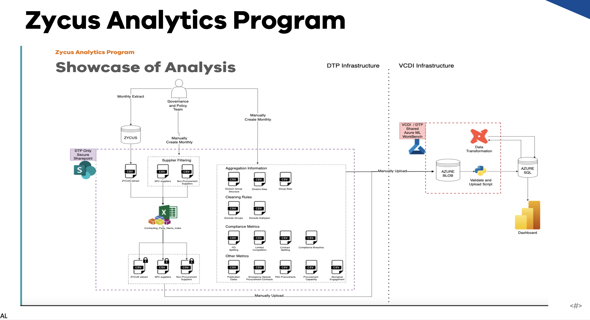
Objectives
After joining VCDI after sprint 17 (see Figure 2), our objective was to complete the Anomaly Detection deliverable of the ZAP Anomaly project. VCDI worked in an Agile Environment. Agile workflow refers to managing and completing projects emphasizing flexibility, collaboration, and continuous improvement. It is based on the Agile software development methodology and is characterized by iterative and incremental delivery, adaptive planning, and delivery of working software. At each sprint, customers and stakeholders provide their feedback, which is incorporated at the end of each sprint. This method enables developers to spot problems early on and fix them in a timely manner. It also improves the project’s efficiency and ensures that the final output meets the demands of the customers and stakeholders. (Mathiarasan, 2023). The sprints were of 2 weeks duration each. After every sprint, a meeting was arranged with the client to let them know about the progress and gain their suggestions. Our progress was monitored using the JiraTM Project management software. Jira is a software application developed by the Australian software company Atlassian that allows teams to track issues, manage projects, and automate workflows. (Jira, 2022)
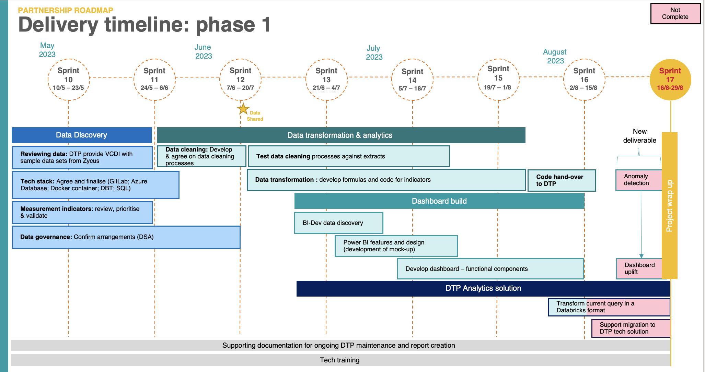
After gaining the access to the database, the DBeaver software was used to have a look at the datasets/tables and run some basic queries for data analysis. DBeaver is a SQL client software application and a database administration tool. (Wikipedia contributors, 2023). The data was imported from AZURE Blob as that was the only common data share point between VCDI and DTP.
The main aim for this project was the anomaly detection in the procurement data for DPT. The Zycus database had different tables indicating different aspects of the contracts that are submitted to the DTP. The database had many tables, but we were supposed to work on 7 tables that all signified different aspect of the contracts for example the value of contract, percentage of splitting, number of contracts etc. The anomalies the client was keen on finding are different for every table for example in the contracts_awarded table, the anomalies will be the contracts having very high contract values in AUD or the group that had many numbers of contracts in a month as compared to other months Etc. Some groups are expected to have very high value contracts but there exist some groups that have usually lower value contracts, if these groups suddenly have a high value contract those need to be flagged and reviewed by the DTP officials. The way how we define an observation as an anomaly is different for every table and will be discussed in detail in the later part of the report. The main motivation to do the anomaly detection was to get hold of the fraudulent contracts so that the procurement team can review the legitimacy of the contracts.
Two machine learning models namely Isolation Forest and Local Outlier Factor were used for the anomaly detection. Then the objective was to merge both the models in a way that it satisfies the expectations of the clients. The final step was to populate the anomaly table in the database that has the all the top n anomalies for a month.
Project workflow
Workflow of ZAP included several steps depicted in Figure 1. The steps included:
- DTP uploading data to ZYCUS database
- Hashing the data via excel to remove personal information of contractors before handing over the data to VCDI.
- DTP manually creating aggregation information, cleaning rules and metrics.
- All of this information was then uploaded to AZURE blob which is a feature of Microsoft Azure. It allows users to store large amounts of unstructured data on Microsoft’s data storage platform. In this case, Blob stands for Binary Large Object, which includes objects such as images and multimedia files. (SnapLogic, 2023)
- Then DBT was used to transform data and python to Analyse and detect anomalies in the data.
Analysis
Data Description and Pre-Processing
The data provided for anomaly detection was the procurement data for DTP. DTP gets several contracts every month for different groups. There might be some error while entering the data onto the database or there can be some fraudulent contracts that needs to be reviewed by the officials. For this analysis, 7 datasets or tables in the database which explained about the different aspects of the contracts submitted to DTP were used. The different datasets used were referred to as metrics. They explained different aspects of the data for example the contract value and the number of contracts awarded, the occurrence of contract splitting, was the contract submitted below or above the threshold and by how much.
Most of the tables had similar format and structure. The common columns in the data frame were reference_month,reference_year,reference_quarter,DTP_group DTP_division,DTP_region,Contract_category,metric_name, metric_value,metric_value_denominator,metric_value_numerator.
The data description is shown in ?@tbl-dts:
| Column Name | Data Type | Description |
|---|---|---|
| Metric Name | object | It signifies the aspect of the contract shown in the table |
| metric value | float64 | The value of the metric in the table |
| metric_value_numerator | float64 | If the metric name had percentage, it’s the numerator for that. |
| metric_value_denominator | float64 | If the metric name had percentage, it’s the denominator for that. |
| DTP_group | object | DTP_group specified the group classified by DTP in which the submitted contract was in. This was one of the aggregation level. |
| DTP_division | object | DTP_division specified the division classified by DTP in which the submitted contract was in. This was another aggregation level. |
| DTP_region | object | DTP_region specified the region classified by DTP in which the submitted contract was in. This was another one of the aggregation level. |
| reference_month | int64 | month in which the contract was submitted to DTP. |
| reference_quarter | int64 | quarter in which the contract was submitted to DTP. |
| reference_year | int64 | year in which the contract was submitted to DTP. |
| contract_category | object | This specified the category of the contract in which the submitted contract was in in. This was another aggregation level. In some of the tables, this was referred to as contract type. |
The hierarchy of the aggregations for all the datasets is shown in Figure 3 :
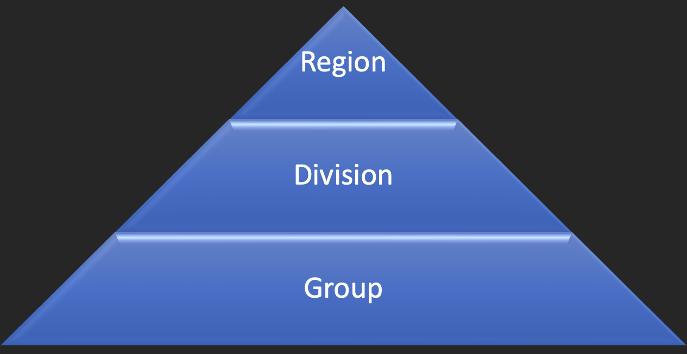
The biggest aggregation was the DTP_group. Every DTP_group had DTP_divisions in them. The DTP_divisions further had DTP_region in them. The Important aggregations in which the client was interested were as follows:
Group
Group / Division
Group / Region
Contract category.
The data provided did not have any date column so, the date column was created in every data frame using the reference_month and reference_year columns. For the same, the previously mentioned columns were converted into datetype and then every month was given a day, since the data was given according to the month, same day was allocated to every month so that the authenticity of the data is not hindered. After the creation of the column, it was converted into datetype format for proper analysis.
Preliminary Analysis
The first couple of weeks, in order to understand the existing data and codeflow, data exploration was performed and some basic techniques like plotting time series graphs were applied to visualise anomalies. As the goal of our project was to show Top 20 anomalies of every month across all aggregations and metrics (datasets), recognising any patterns in time series plot was really important. As mentioned before, most of the analysis in this report is performed on the dataset ‘metric_contract_awarded’ which entails information about the contract’s value. After preprocessing the dataset ‘metric_contract_awarded’ the first time series was plotted.
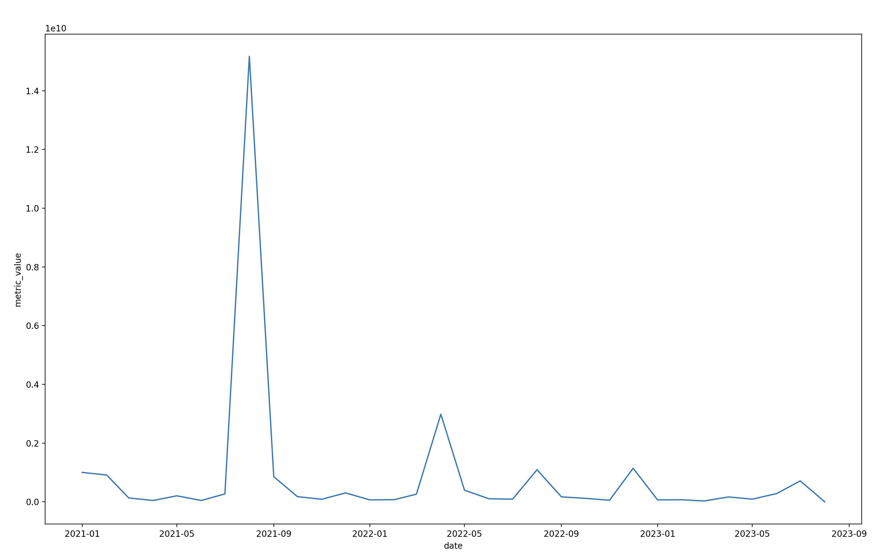
In the above figure, the Y-axis shows the sum of contract values for every month from the start of the year 2021 to September, 2023. A very big peak can be observed near the month of August, 2021, which was a little suspicious as it first of all will be the only anomalous value which makes the project redundant, second of all the peak was observed at the same time in all the datasets. After discussing the matter with the Department of Transport and Planning (DTP), the fact that the majority of the data was uploaded to ZYCUS in August, 2021 was pointed out by DTP’s analytics team. It was then advised to perform analysis on data after September, 2021.
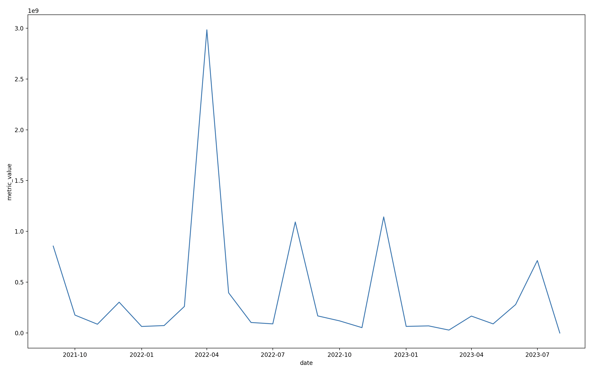
As the length of data is not much, recognizing any concrete patterns and building up analysis on it seems a little far fetched. Some peaks can be observed in the time series plot but it does not provide any information. Plotting the data for different aggregations, as mentioned before, was the next step to look for some obvious patterns. This would also help to understand the data aggregations better which makes the analysis high quality.
Visualising data for important aggregations
The aggregations important for the analysis, as mentioned by DTP were ‘DTP_group’, ‘contract_category’, ‘DTP_group/DTP_division’ and ‘DTP_group/DTP_region’.
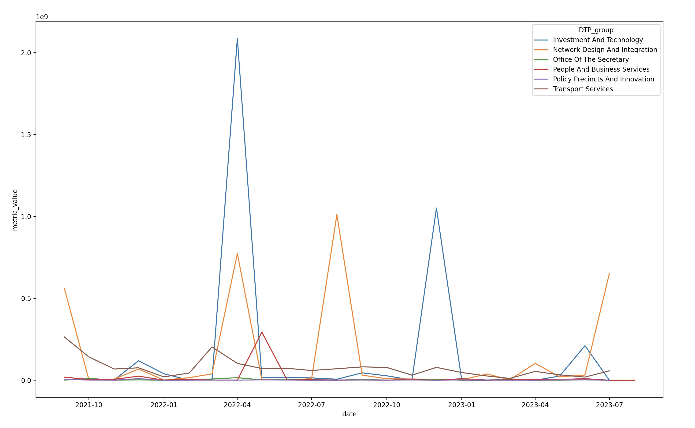
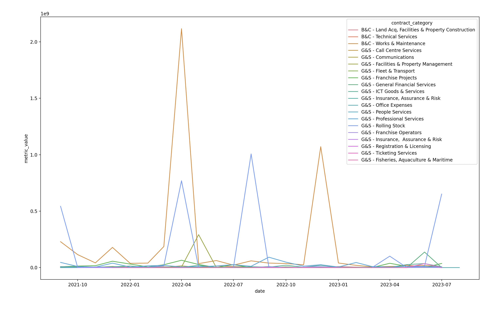
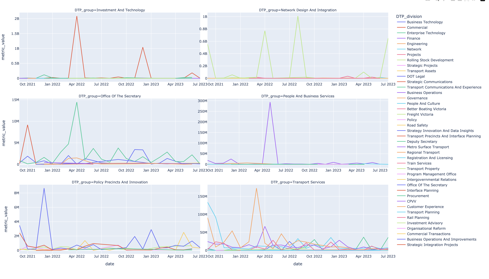
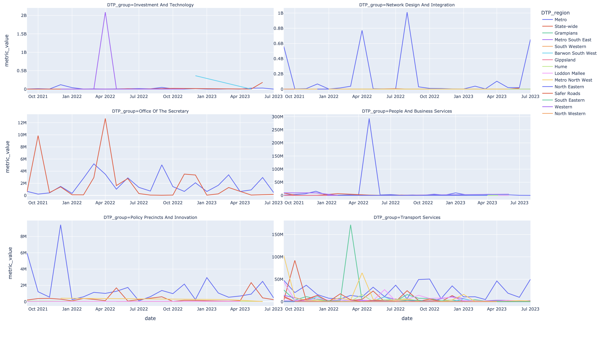
Points to be noted:
- Time dimension does not play an important role in this analysis as no concrete can be observed from the graphs.
- It is not mandatory that every group has each and every division or region.
- Some similarities can be observed in fig Contract and Fig group but that is out of scope of this project.
Anomaly detection
What are anomalies or outliers? When working with real-world data it is common to come across data points that fall outside of the normal trend. These are often referred to as outliers or anomalies. Detecting anomalies can be useful for a number of reasons, including:
- Detecting fraudulent credit card transactions
- Identifying unusual network traffic which could indicate unauthorised access
- Detecting anomalous spots/pixels within deep space images that have the potential to be a new star
- Detecting anomalous “features” within medical scans
Within well log measurements and petrophysical data, outliers can occur due to washed-out boreholes, tool and sensor issues, rare geological features, and issues in the data acquisition process. It is essential that outliers are identified and investigated early on in the data science/machine learning workflow as they can result in inaccurate predictions from machine learning models. There are numerous algorithms, both supervised and unsupervised, available within Python that allow these anomalies to be detected. (McDonald, 2022)
Problems faced and Solutions applied to achieve the goal
Method to find an anomaly: Two approaches could have been applied in this situation to detect anomalies in the datasets. One was to hard code rules to find anomalies in every dataset which was lengthy and time consuming but easy to to understand eg., creating a threshold like mean, median etc. Second was to incorporate machine learning models to detect anomalies which were easy to device but hard to interpret. Solution: According to DTP’s team code interpretability is not important as the code would only be accessed and maintained only by the technical team. In order to make the code more dynamic it was suggested to incorporate Machine learning models to detect anomalies.
How to combine models :The second problem encountered after the finalization of the method to find the anomaly was how to combine the two models.The Isolation Forest Model captured the anomalies at the upper end of the spectrum very well. While the LOF captured both the high value anomalies as well as the very low value anomalies. The two methods of combining the models were either using the OR statement or using the AND statement.Using the OR statement captured the anomalies from both the models resulting in the number of anomalies being shot up. On consultation with the client, the low value anomalies were not much of the concern to them. So, the method finalized for joining the models was using the AND statement as it made the anomaly detection process fail safe.
Deciding the contamination factor: The value of contamination factor is playing an important role in the functioning of the model and in determining the accuracy of the results. From the figures it can be observed that changing the value of the contamination factor by a little has a lot of effect on the output of the model (see Figure 4), implying that it is a very sensitive parameter. On consultation with the client, they suggested on making the contamination factor as a variable in the final function allowing them to change the parameter according to their needs.
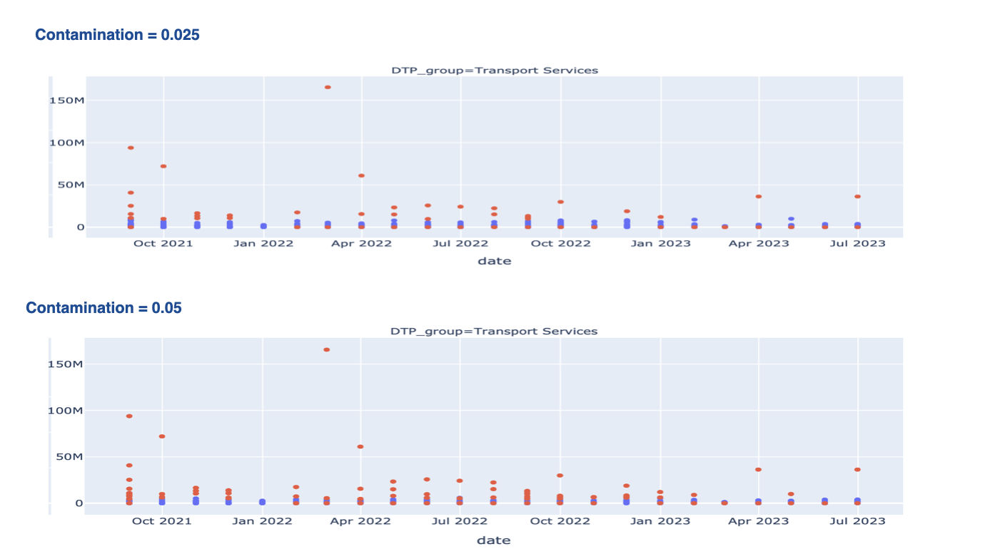
Isolation Forest
Fei Tony Liu and Zhi-Hua Zhou first presented the Isolation Forest technique in 2008 as a way to find outliers in data. The method uses binary trees to find anomalies, which leads to a linear time complexity and little memory consumption, making it ideal for handling big datasets. Isolation Forest has become well-known since it was first introduced as a quick and dependable method for anomaly detection in a variety of industries, including finance, cybersecurity, and medical research.
Isolation Forests(IF), similar to Random Forests, are build based on decision trees. And since there are no predefined labels here, it is an unsupervised model. Randomly subsampled data is processed in a tree structure using randomly chosen features in an isolation forest. Since it took more cuts to separate the samples farther into the tree, they are less likely to be abnormalities. In a similar vein, data that terminate in shorter branches also point to anomalies because the tree found it easier to distinguish them from other observations. As previously stated, an ensemble of binary decision trees is all that Isolation Forests use for outlier detection. Furthermore, an isolation forest’s trees are all referred to as isolation trees (iTrees). The algorithm generates Isolation Trees in order to begin training with the data.
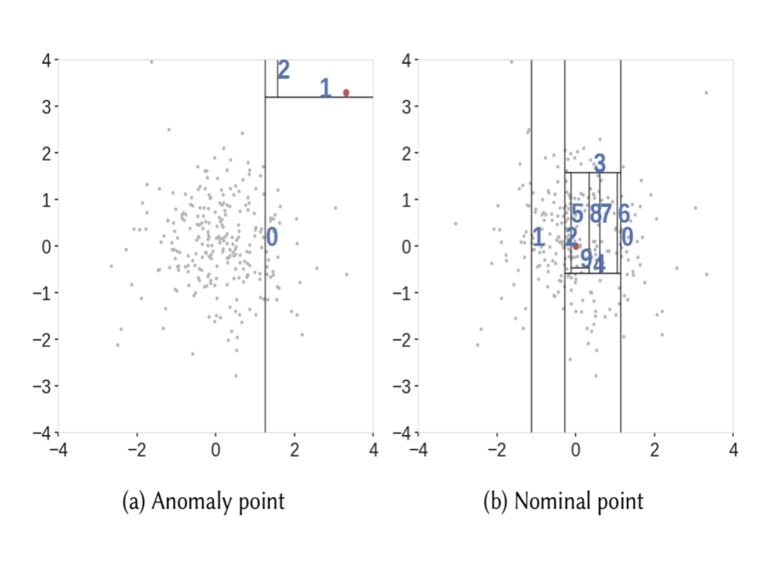
Let us look at the complete algorithm step by step:
- When given a dataset, a random sub-sample of the data is selected and assigned to a binary tree.
- Branching of the tree starts by selecting a random feature (from the set of all N features) first. And then branching is done on a random threshold ( any value in the range of minimum and maximum values of the selected feature).
- If the value of a data point is less than the selected threshold, it goes to the left branch else to the right. And thus a node is split into left and right branches.
- This process from step 2 is continued recursively till each data point is completely isolated or till max depth(if defined) is reached.
- The above steps are repeated to construct random binary trees.
Model training is finished after an ensemble of iTrees (Isolation Forest) is constructed. A data point is passed through each of the previously trained trees during the scoring process. Each data point is now given a “anomaly score” according to the depth of the tree needed to reach that point. The depth data gathered from every iTree is used to create this score. Based on the supplied contamination parameter (the proportion of anomalies contained in the data), an anomaly score of -1 is awarded to anomalies and 1 to normal points. (Akshara, 2023)
Application in Python
IsolationForest is a function of a library named sklearn.ensemble which helps the user to find anomalies in a dataset. The important parameters used in this function while finding anomalies were:
Number of estimators: The number of base estimators, or trees, in the ensemble, or the number of trees that will be constructed in the forest, is denoted by the term “n_estimators.” This optional argument takes the form of an integer. 100 is the default value.
Max samples: The maximum number of samples required to train each base estimator is max_samples. Every sample will be used for every tree if max_samples exceeds the quantity of samples supplied. Max Samples’ default value is ‘auto’. If ‘auto’, then min(256, n_samples) = max_samples
Contamination: The estimated percentage of outliers in the data set is a parameter to which the algorithm is highly sensitive. When fitting, this is used to specify the cutoff point for the sample scores. ‘Auto’ is the default value. If “auto,” the threshold value will be ascertained as it was in the Isolation Forest original research article.
Max features: Not every base estimator in the dataset has been trained using all of its features. It is the quantity of features that each base estimator or tree will receive from the total features.Max features has a default value of one. (K, 2021)
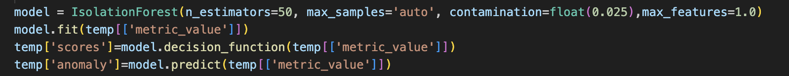
Line 1 in the code snippet in Figure 5 creates a base model with n_estimators = 50, contamination = 0.025 or 2.5%, and max_features = 1.
Line 2 fits the model on the dataset ‘metric_contract_awarded’ with ‘metric_value’ which is the value of contracts as it’s response variable.
Line 3 creates a column called ‘scores’ which contains scores given to each observation by the model to quantify how much of an anomaly or not is an observation.
Line 4 creates a column called ‘anomaly’ which tells the user if an observation is an anomaly or not. ‘-1’ signifies that an observation IS an anomaly and ‘1’ tells that an observation is NOT an anomaly.
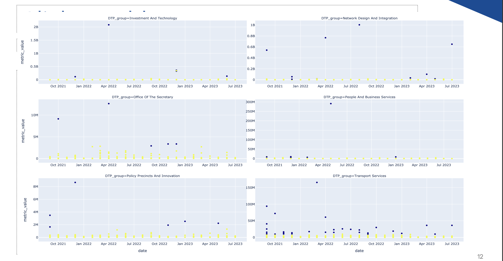
Figure 6 visualises Isolation Forest applied on the dataset ‘metric_contract_awarded’. The Blue dots represent anomalies and the Yellow dots are the normal points. The graph is faceted by ‘DTP_group’ to visualise anomalies by one of the four important aggregations as an example.
Local Outlier Factor
LOF performs well when the density of the data is not the same throughout the dataset. It is an unsupervised machine learning technique. It is effective in identifying outliers by using the nearest neighbourhood density of data points. In essence, LOF considers K-neighbours, or the set of points that are inside the K-distance (radius) circle, and K-distance, or the distance between the points. The distance between a point and its Kᵗʰ nearest neighbour is known as the K-distance. A collection of points that are inside or on the circle of radius K-distance is included in the K-neighbours represented by Nₖ(A).
LOF uses local reachability density to assign a data point as an outlier or not. It is the inverse of the average reachability distance of a point from its neighbours. In the context of the Local Reachability Density (LRD) formula, when the average reachability distance is higher, it indicates that the nearby points are located at a greater distance from a specific point. This, in turn, suggests that there is a lower density of points in the vicinity of that point. In simpler terms, a low LRD value signifies that the nearest cluster of points is located quite a distance away from the point in question. The Local Outlier Factor (LOF) calculation involves comparing the Local Reachability Density (LRD) of each point with the average LRD of its K neighbours. LOF is essentially the ratio of the average LRD of a point’s K neighbours to the LRD of the point itself.
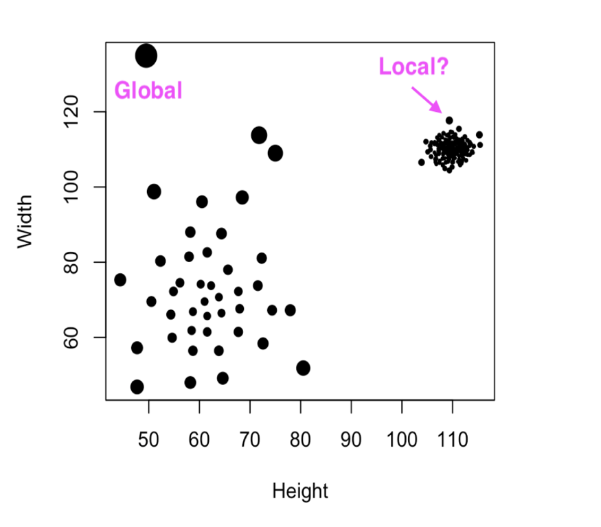
After obtaining the LRD values for all data points, the LOF score for each point is determined. The LOF (scores) for a point is the ratio of the LRD of that point to the average LRD of its k-nearest neighbours. LOF values are calculated in such a way that they provide a relative measure of how a point’s density compares to that of its neighbours.
In simple terms, if a point is not considered an outlier (i.e., it’s an inlier), the ratio of the average LRD of its neighbours will be approximately equal to its own LRD because the point and its neighbours have similar densities. In this scenario, the LOF value will be close to 1. Conversely, if a point is an outlier, its LRD will be lower than the average LRD of its neighbours, resulting in a higher LOF value. Typically, a LOF greater than 1 is indicative of an outlier. However, this rule doesn’t always hold true. For instance, if we are aware that there is only one outlier in the dataset, we can identify it by selecting the point with the highest LOF value from all the LOF values calculated. The default metric to use for distance comparison is minkowski in python. (Jayaswal, 2021)
Application in Python
To apply the Local Outlier Factor method of anomaly detection in Python, sklearn.neighbors library was used. The function used was LocalOutlierFactor. The main parameters of the LocalOutlierFactor function are:
n_neighbours: The default number of neighbours to be utilized for k-neighbors queries. If the specified value of “n_neighbors” exceeds the total number of available samples, all available samples will be used. (Sklearn.Neighbors.LocalOutlierFactor, n.d.)
Contamination: It defined as the proportion of the data we expect to be anomalous.
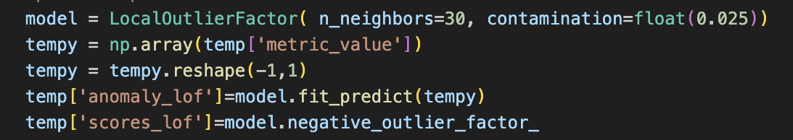
From the code snippet above Figure 7, it can be seen that:
In the first line, the object model is being created which contains the base LOF model.
In the second line, the column metric_value is being converted into an array.
In the third line, the above created array is being converted into a 2-D array as it’s a requirement for the functions being used after this process.
In the fourth line, a new column is being created titled anomaly_lof. This column is created using the fit_predict function. This column contains the values of 1 or -1 signifying if the observation is an anomaly or not.
In the fifth line a new column is being created titled scores_lof. This column contains the values of the scores which are given to each observation by the LOF function. Higher the value of the score, more anomalous the observation.
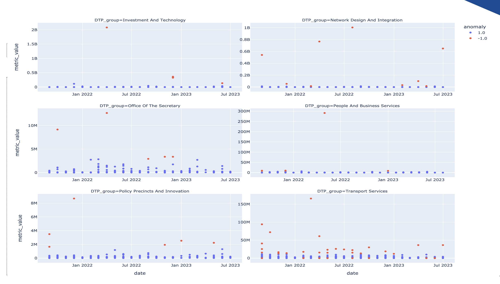
The above graph Figure 8 is the visualization of the Local Outlier Factor Model for the metric_contract_awarded table. The Blue values are Non anomalous while the red coloured data points are the anomalous ones. The Above graph is faceted by DTP_group which is one of the four important aggregations.
Combining models
Combining models using the AND logic, as discussed above, to get the anomalies common in both the models making the anomaly detection process fail proof in meeting DTP’s (clients) demands.
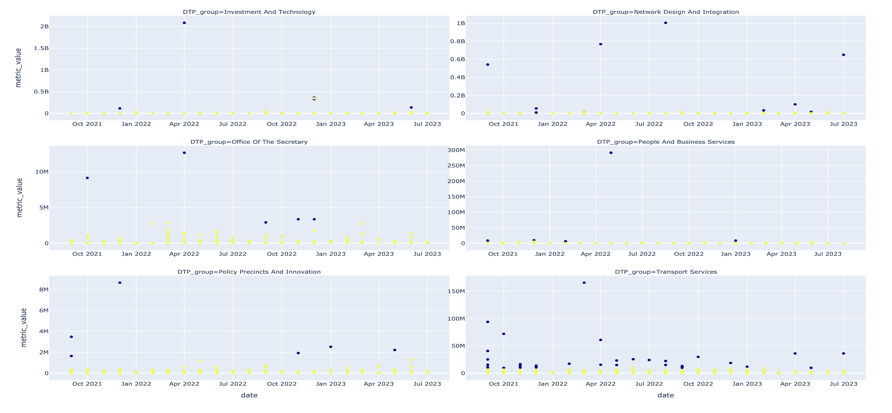
From the graph above Figure 9, we can be observe anomalies common in both the models, with contamination factor equal to 0.025 or 2.5%.
Conclusion
After both the models for anomaly detection were finalized, two functions were created one each for LOF and Isolation Forest that loops over all the different aggregations and all the 7 datasets of interest. The output of these function was a data frame that had all the observations from all the datasets and two new columns one for the anomaly and other for the score.
Then a third function was created that combined the outputs of the above two functions using AND logic and return the top 20 anomalies for every month. This data was then used to populate a SQL table named anomaly in the database and this table will be used to for the creation of the last page for an existing Power BI dashboard that will be viewed by the DTP officials.
For further analysis, when a larger dataset is available, the anomalies detected using these functions can be used to label the data and the labelled data can be used for the purpose of supervised learning. Hence more anomaly detection models can be used, and future observations can be classified as anomalies using the newer models.
Github Repo Link
GitLab repo VCDI: https://gitlab.com/digital-vic/vcdi/rdp/rdp-analytics/analytics-use-cases/zap/zap-anomaly.
GitHub Repo containing Report, Presentation and required code:
https://github.com/kvatsal2000/ETC-5543-Zap-Anomaly-Detection
References
Victorian Centre for Data Insights. (2023, September 21). vic.gov.au. https://www.vic.gov.au/victorian-centre-data-insights
SnapLogic. (2023, August 18). Azure Blob Storage - explanation & Overview. https://www.snaplogic.com/glossary/azure-blob-storage#:~:text=Azure%20Blob%20storage%20is%20a,as%20images%20and%20multimedia%20files.
McDonald, A. (2022, September 29). Isolation Forest — Auto Anomaly Detection with Python. Medium. https://towardsdatascience.com/isolation-forest-auto-anomaly-detection-with-python-e7a8559d4562#:~:text=Isolation%20Forest%20is%20a%20model,the%20minimum%20and%20maximum%20values.
Akshara. (2023, September 13). Anomaly detection using Isolation Forest – A Complete Guide. Analytics Vidhya. https://www.analyticsvidhya.com/blog/2021/07/anomaly-detection-using-isolation-forest-a-complete-guide/
K, D. (2021, April 9). Anomaly detection using isolation forest in Python | Paperspace blog. Paperspace Blog. https://blog.paperspace.com/anomaly-detection-isolation-forest/
Mathiarasan, K. (2023, October 16). What is Agile Workflow? | Steps to Create Agile Workflow - Kissflow. https://kissflow.com/workflow/guide-to-agile-workflow-process/#:~:text=Agile%20workflow%20refers%20to%20managing,and%20delivery%20of%20working%20software.
Jira. (2022, November 30). https://www.productplan.com/glossary/jira/
Wikipedia contributors. (2023, October 7). DBeaver. Wikipedia. https://en.wikipedia.org/wiki/DBeaver
Jayaswal, V. (2021, December 15). Local Outlier Factor (LOF) — Algorithm for outlier identification. Medium. https://towardsdatascience.com/local-outlier-factor-lof-algorithm-for-outlier-identification-8efb887d9843
sklearn.neighbors.LocalOutlierFactor. (n.d.). Scikit-learn. https://scikit-learn.org/stable/modules/generated/sklearn.neighbors.LocalOutlierFactor.html